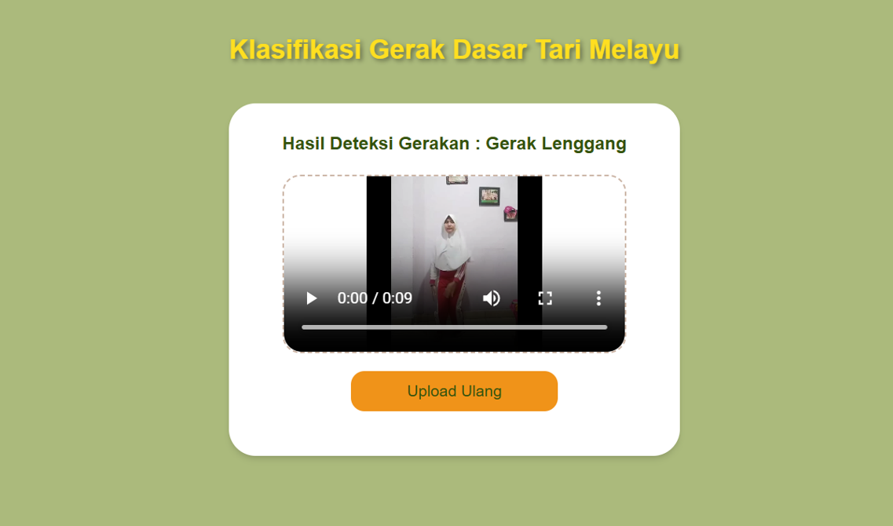

Projects
Projects

Basic Malay Dance Movement Classification
A web application for classifying basic Malay dance movements through video uploads. This project uses an I3D model for action recognition.

Safari Detective
A game playable on both Android mobile devices and PC, designed to help users learn about animal reproduction and dietary types across three habitats: air, land, and sea.
Udaraku
Udaraku is an Android application built with Kotlin to determine air quality categories — healthy, moderate, or unhealthy — based on five key environmental parameters.